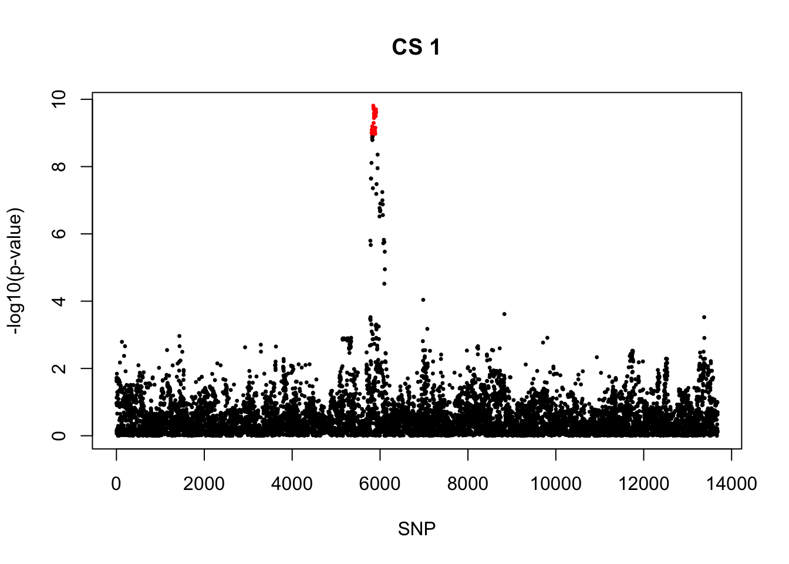
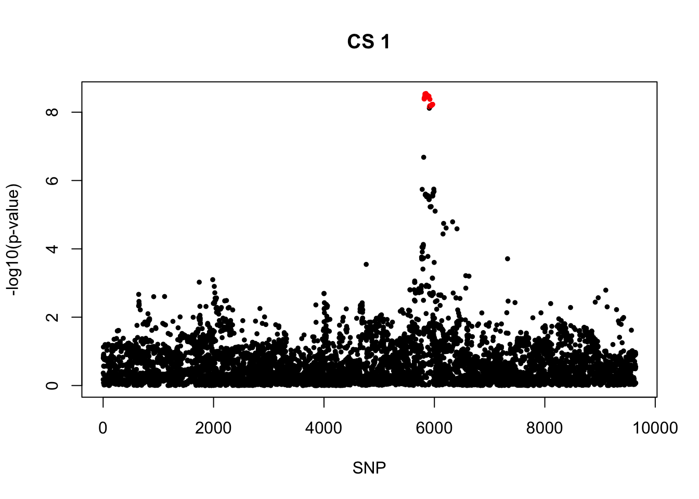
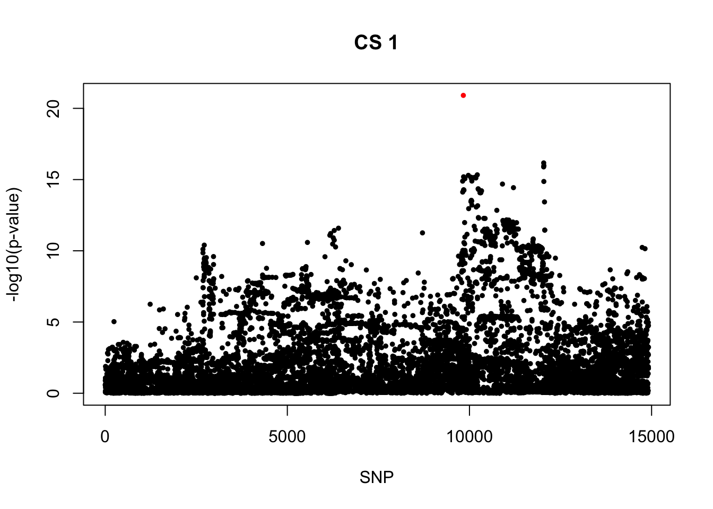

Self-report asthma: Coxph-SuSIE
Yunqi Yang
6/20/2024
Last updated: 2024-08-19
Checks: 7 0
Knit directory: survival-data-analysis/
This reproducible R Markdown analysis was created with workflowr (version 1.6.2). The Checks tab describes the reproducibility checks that were applied when the results were created. The Past versions tab lists the development history.
Great! Since the R Markdown file has been committed to the Git repository, you know the exact version of the code that produced these results.
Great job! The global environment was empty. Objects defined in the global environment can affect the analysis in your R Markdown file in unknown ways. For reproduciblity it’s best to always run the code in an empty environment.
The command set.seed(20240324) was run prior to running the code in the R Markdown file. Setting a seed ensures that any results that rely on randomness, e.g. subsampling or permutations, are reproducible.
Great job! Recording the operating system, R version, and package versions is critical for reproducibility.
Nice! There were no cached chunks for this analysis, so you can be confident that you successfully produced the results during this run.
Great job! Using relative paths to the files within your workflowr project makes it easier to run your code on other machines.
Great! You are using Git for version control. Tracking code development and connecting the code version to the results is critical for reproducibility.
The results in this page were generated with repository version 1fa08d0. See the Past versions tab to see a history of the changes made to the R Markdown and HTML files.
Note that you need to be careful to ensure that all relevant files for the analysis have been committed to Git prior to generating the results (you can use wflow_publish or wflow_git_commit). workflowr only checks the R Markdown file, but you know if there are other scripts or data files that it depends on. Below is the status of the Git repository when the results were generated:
Ignored files:
Ignored: .DS_Store
Ignored: .Rhistory
Ignored: .Rproj.user/
Ignored: output/.DS_Store
Ignored: scripts/.DS_Store
Ignored: scripts/.RData
Ignored: scripts/.Rhistory
Untracked files:
Untracked: data/gwas_chr17_33500001_39800000.txt
Unstaged changes:
Deleted: output/top_signal_AA.csv
Deleted: output/top_signal_AOA.csv
Deleted: output/top_signal_COA.csv
Note that any generated files, e.g. HTML, png, CSS, etc., are not included in this status report because it is ok for generated content to have uncommitted changes.
These are the previous versions of the repository in which changes were made to the R Markdown (analysis/susie_asthma_result2.Rmd) and HTML (docs/susie_asthma_result2.html) files. If you’ve configured a remote Git repository (see ?wflow_git_remote), click on the hyperlinks in the table below to view the files as they were in that past version.
| File | Version | Author | Date | Message |
|---|---|---|---|---|
| html | e21cfdb | yunqiyang0215 | 2024-07-04 | Build site. |
| html | ba3bad2 | yunqiyang0215 | 2024-06-28 | Build site. |
| html | e5d84dd | yunqiyang0215 | 2024-06-28 | Build site. |
| Rmd | ca1554f | yunqiyang0215 | 2024-06-28 | wflow_publish("analysis/susie_asthma_result2.Rmd") |
| html | 7199ead | yunqiyang0215 | 2024-06-27 | Build site. |
| Rmd | b8f7f42 | yunqiyang0215 | 2024-06-27 | wflow_publish("analysis/susie_asthma_result2.Rmd") |
| html | b700347 | yunqiyang0215 | 2024-06-27 | Build site. |
| Rmd | 9148531 | yunqiyang0215 | 2024-06-27 | wflow_publish("analysis/susie_asthma_result2.Rmd") |
| html | 6211416 | yunqiyang0215 | 2024-06-21 | Build site. |
| Rmd | 87b8057 | yunqiyang0215 | 2024-06-21 | wflow_publish("analysis/susie_asthma_result2.Rmd") |
| html | aa454ea | yunqiyang0215 | 2024-06-21 | Build site. |
| Rmd | 5aa21af | yunqiyang0215 | 2024-06-21 | wflow_publish("analysis/susie_asthma_result2.Rmd") |
| html | 73f91ce | yunqiyang0215 | 2024-06-20 | Build site. |
| Rmd | ed3b6e2 | yunqiyang0215 | 2024-06-20 | wflow_publish("analysis/susie_asthma_result2.Rmd") |
| html | a4d10d1 | yunqiyang0215 | 2024-06-20 | Build site. |
| Rmd | 706dd10 | yunqiyang0215 | 2024-06-20 | wflow_publish("analysis/susie_asthma_result2.Rmd") |
Description:
Coxph Susie result on all asthma/ AOA/ COA in UKBiobank.
library(survival)
library(susieR)
devtools::load_all("/Users/nicholeyang/Downloads/logisticsusie")ℹ Loading logisticsusieRegion 1
Marginal significant signals for COA, weak signals for AOA.
rs11071559_T was the one with smallest pvalue in all asthma, and PIP = 0.24. Carole’s paper also reported this one as the top signal. But in AOA, it’s not the one with smallest pval, the pip is a lot smaller.
1. All asthma cases
region = "chr15_59000001_63400000"
res = readRDS(paste0("/Users/nicholeyang/Downloads/survivalsusie/result/asthma_self_report/result/all/fit.susie.", region, ".rds"))
gwas = readRDS(paste0("/Users/nicholeyang/downloads/survivalsusie/result/gwas_surv/all_gwas_", region, ".rds"))fit = res[[1]]
X = res[[2]]
print(res[[3]]) user system elapsed
48021.738 27994.163 4110.945 pip <- logisticsusie:::get_pip(fit$alpha)
effect_estimate <- colSums(fit$alpha * fit$mu)
pip.sorted = sort(pip, decreasing = TRUE)
pip.sorted[1:10] [1] 0.24346967 0.10867456 0.10424352 0.10165664 0.08854406 0.06504377
[7] 0.05878656 0.04595972 0.04407223 0.04344761class(fit) = "susie"
cs <- susie_get_cs(fit, X)
cs$cs
$cs$L1
[1] 428 438 442 444 446 453 454 455 460 478 480 482 485 490 492 497 498 499 501
$purity
min.abs.corr mean.abs.corr median.abs.corr
L1 0.7701707 0.9518411 0.965287
$cs_index
[1] 1
$coverage
[1] 0.9584117
$requested_coverage
[1] 0.95snps1 = colnames(X)[cs$cs$L1]
colors <- ifelse(rownames(gwas) %in% snps1, "red", "black")
plot(-log10(gwas[, "p.value.spa"]), col = colors, xlab = "SNP", ylab = "-log10(p-value)", cex = 0.8, pch = 20, main = "CS 1")
| Version | Author | Date |
|---|---|---|
| a4d10d1 | yunqiyang0215 | 2024-06-20 |
cbind(gwas[rownames(gwas) %in% snps1, ], pip[sort(cs$cs$L1)]) MAF missing.rate p.value.spa p.value.norm Stat
rs7183955_C 0.1857994 0 2.047135e-12 1.965395e-12 -686.9818
rs922783_G 0.1348981 0 7.063027e-12 6.654735e-12 -589.8232
rs12900122_T 0.1334614 0 2.805769e-12 2.621221e-12 -598.6492
rs12903966_T 0.1334992 0 2.479238e-12 2.313825e-12 -600.2511
rs16943087_G 0.1333576 0 4.033002e-12 3.778604e-12 -594.3751
rs2279294_C 0.1335081 0 1.268415e-11 1.199169e-11 -581.5727
rs2279293_G 0.1333651 0 1.466795e-11 1.388085e-11 -579.6246
rs2279292_C 0.1345950 0 5.626978e-12 5.290515e-12 -593.7446
rs8025689_C 0.1352865 0 8.350735e-12 7.879322e-12 -590.3153
rs12905602_A 0.1333781 0 7.234467e-12 6.809929e-12 -588.6392
rs11633029_C 0.1349144 0 1.688390e-11 1.601014e-11 -580.5839
rs11637671_G 0.1349347 0 1.629390e-11 1.544692e-11 -581.0378
rs11639084_T 0.1321305 0 1.409666e-11 1.332602e-11 -577.8021
rs10519067_A 0.1268612 0 2.796316e-12 2.598234e-12 -588.6569
rs10519068_A 0.1281122 0 1.097777e-12 1.012287e-12 -601.5405
rs11071557_C 0.1300621 0 1.018211e-12 9.399860e-13 -606.1218
rs34753162_C 0.1300892 0 9.385815e-13 8.658258e-13 -607.0330
rs34986765_C 0.1298710 0 1.199225e-12 1.108639e-12 -603.5777
rs11071559_T 0.1282230 0 4.231213e-13 3.864963e-13 -613.6394
Var z
rs7183955_C 9530.716 -7.036917 0.02401601
rs922783_G 7382.065 -6.864880 0.02646692
rs12900122_T 7320.864 -6.996668 0.05878656
rs12903966_T 7323.492 -7.014131 0.06504377
rs16943087_G 7324.006 -6.945224 0.04407223
rs2279294_C 7357.135 -6.780312 0.01930962
rs2279293_G 7353.770 -6.759145 0.01772081
rs2279292_C 7409.842 -6.897555 0.03527074
rs8025689_C 7446.700 -6.840725 0.02459909
rs12905602_A 7359.514 -6.861588 0.02795568
rs11633029_C 7423.555 -6.738435 0.01539183
rs11637671_G 7423.697 -6.743638 0.01567289
rs11639084_T 7294.842 -6.765053 0.01741284
rs10519067_A 7076.016 -6.997902 0.04595972
rs10519068_A 7120.226 -7.128826 0.10424352
rs11071557_C 7208.462 -7.139020 0.10165664
rs34753162_C 7207.339 -7.150309 0.10867456
rs34986765_C 7193.795 -7.116299 0.08854406
rs11071559_T 7143.786 -7.260208 0.24346967rm(res, gwas, X, fit)2. COA
region = "chr15_59000001_63400000"
res = readRDS(paste0("/Users/nicholeyang/Downloads/survivalsusie/result/asthma_self_report/result/coa/fit.susie.", region, ".rds"))
gwas = readRDS(paste0("/Users/nicholeyang/downloads/survivalsusie/result/gwas_surv/coa_gwas_", region, ".rds"))fit = res[[1]]
X = res[[2]]
pip <- logisticsusie:::get_pip(fit$alpha)
effect_estimate <- colSums(fit$alpha * fit$mu)
class(fit) = "susie"
cs <- susie_get_cs(fit, X)
cs$cs
$cs$L1
[1] 399 402 404 412 413 414 418 420 421 422 427 438 442 444 446 453 454 455 460
[20] 478 480 482 485 490 492 497 498 499 501
$purity
min.abs.corr mean.abs.corr median.abs.corr
L1 0.9257579 0.9692791 0.9758275
$cs_index
[1] 1
$coverage
[1] 0.9544083
$requested_coverage
[1] 0.95snps1 = colnames(X)[cs$cs$L1]
colors <- ifelse(rownames(gwas) %in% snps1, "red", "black")
plot(-log10(gwas[, "p.value.spa"]), col = colors, xlab = "SNP", ylab = "-log10(p-value)", cex = 0.5, pch = 20, main = "CS 1")
cbind(gwas[rownames(gwas) %in% snps1, ], pip[sort(cs$cs$L1)]) MAF missing.rate p.value.spa p.value.norm Stat
rs1351544_T 0.1341295 0 9.895036e-10 8.414605e-10 -263.4732
rs1817479_C 0.1344601 0 8.132799e-10 6.885165e-10 -265.0670
rs8025324_A 0.1344176 0 8.021875e-10 6.788621e-10 -265.1779
rs16943064_A 0.1364784 0 1.172726e-09 1.005329e-09 -264.2926
rs9920526_T 0.1343697 0 6.366544e-10 5.354536e-10 -265.8958
rs9920610_C 0.1348054 0 8.368179e-10 7.091747e-10 -264.7028
rs9920560_A 0.1338591 0 1.253162e-09 1.071442e-09 -261.6285
rs9920592_T 0.1339444 0 1.190214e-09 1.016364e-09 -262.2390
rs9920593_T 0.1339534 0 1.183701e-09 1.010668e-09 -262.2757
rs1020730_T 0.1339552 0 1.147584e-09 9.790795e-10 -262.5077
rs7162065_A 0.1339407 0 1.042373e-09 8.871590e-10 -263.2866
rs922783_G 0.1351647 0 1.548087e-10 1.253239e-10 -277.6165
rs12900122_T 0.1337288 0 1.944670e-10 1.579539e-10 -274.9598
rs12903966_T 0.1337666 0 1.742019e-10 1.410452e-10 -275.7517
rs16943087_G 0.1336174 0 5.046940e-10 4.210164e-10 -268.5031
rs2279294_C 0.1337616 0 2.700752e-10 2.214715e-10 -273.3877
rs2279293_G 0.1336176 0 3.585693e-10 2.963293e-10 -271.3871
rs2279292_C 0.1348538 0 3.179060e-10 2.624504e-10 -273.2397
rs8025689_C 0.1355442 0 2.464930e-10 2.023675e-10 -275.6416
rs12905602_A 0.1336304 0 8.625683e-10 7.299206e-10 -265.4119
rs11633029_C 0.1351697 0 1.057382e-09 9.019703e-10 -265.1024
rs11637671_G 0.1351902 0 1.025740e-09 8.743397e-10 -265.3194
rs11639084_T 0.1323729 0 6.981137e-10 5.861420e-10 -265.7224
rs10519067_A 0.1271050 0 2.680525e-10 2.165484e-10 -268.2542
rs10519068_A 0.1283646 0 3.155562e-10 2.569136e-10 -267.9810
rs11071557_C 0.1303221 0 2.404484e-10 1.950564e-10 -271.4411
rs34753162_C 0.1303492 0 2.387050e-10 1.936093e-10 -271.4687
rs34986765_C 0.1301288 0 1.989866e-10 1.604427e-10 -272.4379
rs11071559_T 0.1284794 0 2.440037e-10 1.971198e-10 -270.1615
Var z
rs1351544_T 1843.208 -6.136902 0.02242937
rs1817479_C 1846.390 -6.168705 0.02532449
rs8025324_A 1846.598 -6.170938 0.02553851
rs16943064_A 1871.940 -6.108562 0.01956168
rs9920526_T 1834.303 -6.208345 0.02817840
rs9920610_C 1844.114 -6.164028 0.02361636
rs9920560_A 1840.519 -6.098387 0.01896717
rs9920592_T 1844.016 -6.106819 0.01934669
rs9920593_T 1843.990 -6.107716 0.01940530
rs1020730_T 1844.192 -6.112784 0.01973366
rs7162065_A 1845.654 -6.128492 0.02080614
rs922783_G 1862.510 -6.432740 0.09467222
rs12900122_T 1847.224 -6.397488 0.07676674
rs12903966_T 1847.887 -6.414760 0.08424830
rs16943087_G 1847.951 -6.246030 0.03435119
rs2279294_C 1856.112 -6.345662 0.05550302
rs2279293_G 1855.251 -6.300687 0.04363262
rs2279292_C 1869.499 -6.319477 0.04814284
rs8025689_C 1878.621 -6.359533 0.06073746
rs12905602_A 1856.758 -6.159463 0.02161222
rs11633029_C 1872.809 -6.125857 0.01872226
rs11637671_G 1872.848 -6.130808 0.01905954
rs11639084_T 1840.341 -6.194113 0.02483192
rs10519067_A 1785.113 -6.349121 0.05277266
rs10519068_A 1796.358 -6.322771 0.04594549
rs11071557_C 1818.568 -6.365183 0.05576504
rs34753162_C 1818.284 -6.366326 0.05604159
rs34986765_C 1814.848 -6.395100 0.06527948
rs11071559_T 1802.376 -6.363568 0.05809982rm(res, gwas, X, fit)3. AOA
region = "chr15_59000001_63400000"
res = readRDS(paste0("/Users/nicholeyang/Downloads/survivalsusie/result/asthma_self_report/result/aoa/fit.susie.", region, ".rds"))
gwas = readRDS(paste0("/Users/nicholeyang/downloads/survivalsusie/result/gwas_surv/aoa_gwas_", region, ".rds"))fit = res[[1]]
X = res[[2]]
pip <- logisticsusie:::get_pip(fit$alpha)
effect_estimate <- colSums(fit$alpha * fit$mu)
class(fit) = "susie"
cs <- susie_get_cs(fit, X)
cs$cs
NULL
$coverage
NULL
$requested_coverage
[1] 0.95rm(res, gwas, X, fit)Region 2
Very significant signals for COA, marginal significant signals for AOA.
All asthma has a very weird CS. One All asthma CS overlap with COA CS. AOA CS has no overlap with other CSs.
1. All asthma cases
region = "chr2_102100001_105300000"
res = readRDS(paste0("/Users/nicholeyang/Downloads/survivalsusie/result/asthma_self_report/result/all/fit.susie.", region, ".rds"))
gwas = readRDS(paste0("/Users/nicholeyang/downloads/survivalsusie/result/gwas_surv/all_gwas_", region, ".rds"))fit = res[[1]]
X = res[[2]]
print(res[[3]]) user system elapsed
370760.90 210483.81 30824.19 pip <- logisticsusie:::get_pip(fit$alpha)
effect_estimate <- colSums(fit$alpha * fit$mu)
pip.sorted = sort(pip, decreasing = TRUE)
pip.sorted[1:10] [1] 0.45753680 0.05677487 0.05635246 0.05510944 0.05506850 0.05371545
[7] 0.04598294 0.04059181 0.03899255 0.03087550class(fit) = "susie"
cs <- susie_get_cs(fit, X)
cs$cs
$cs$L2
[1] 2205 2210 2212 2213 2214 2216 2220 2223 2224 2226 2233 2237 2238 2240 2241
[16] 2247 2248 2250 2251 2254 2255 2256 2257 2258 2260 2262 2264 2265 2266 2270
[31] 2273 2274 2276 2277 2279 2281 2282 2283 2287 2292 2295 2296 2299 2301 2302
[46] 2306 2307 2309 2311 2317 2328 2329 2330 2331 2332 2333 2336 2342 2344 2350
[61] 2352
$cs$L1
[1] 2261 2267 2275 2280 2284 2285 2300 2304 2314 2323 2324 2362 2365 2367 2368
[16] 2369 2375 2384 2409
$purity
min.abs.corr mean.abs.corr median.abs.corr
L2 0.9919537 0.9983229 0.9987347
L1 0.9862647 0.9966765 0.9973417
$cs_index
[1] 2 1
$coverage
[1] 0.9524084 0.9600456
$requested_coverage
[1] 0.95par(mfrow = c(1,2))
snps1 = colnames(X)[cs$cs$L1]
colors <- ifelse(rownames(gwas) %in% snps1, "red", "black")
plot(-log10(gwas[, "p.value.spa"]), col = colors, xlab = "SNP", ylab = "-log10(p-value)", cex = 0.8, pch = 20, main = "CS 1")
snps2 = colnames(X)[cs$cs$L2]
colors <- ifelse(rownames(gwas) %in% snps2, "red", "black")
plot(-log10(gwas[, "p.value.spa"]), col = colors, xlab = "SNP", ylab = "-log10(p-value)", cex = 0.8, pch = 20, main = "CS 2")
| Version | Author | Date |
|---|---|---|
| aa454ea | yunqiyang0215 | 2024-06-21 |
cbind(gwas[rownames(gwas) %in% snps1, ], pip[sort(cs$cs$L1)]) MAF missing.rate p.value.spa p.value.norm Stat
rs72823635_C 0.1380777 0 9.576229e-41 1.324452e-41 -1176.896
rs950881_T 0.1380726 0 9.748399e-41 1.349239e-41 -1176.738
rs10179458_T 0.1381013 0 7.403775e-41 1.012584e-41 -1178.446
rs72823641_A 0.1373666 0 4.732089e-42 5.654617e-43 -1193.554
rs10189154_T 0.1380466 0 6.148579e-41 8.334263e-42 -1179.481
rs10189526_T 0.1380464 0 6.114220e-41 8.285568e-42 -1179.512
rs11679893_A 0.1380527 0 6.375127e-41 8.656649e-42 -1179.217
rs10865050_A 0.1380920 0 5.368975e-41 7.237633e-42 -1180.414
rs12053429_T 0.1380637 0 6.694631e-41 9.108477e-42 -1178.781
rs59185885_G 0.1353869 0 2.241854e-41 2.845097e-42 -1167.877
rs58815545_T 0.1380667 0 6.716752e-41 9.140149e-42 -1178.782
rs3771180_T 0.1381264 0 5.608771e-41 7.588367e-42 -1180.484
rs72823646_A 0.1380350 0 3.541638e-41 4.678987e-42 -1183.517
rs13431828_T 0.1380081 0 3.139351e-41 4.123458e-42 -1184.197
rs13408569_C 0.1377062 0 2.707921e-41 3.529341e-42 -1182.912
rs13408661_A 0.1379078 0 2.726747e-41 3.557209e-42 -1184.521
rs10173081_T 0.1380032 0 2.770821e-41 3.618302e-42 -1184.931
rs3771175_A 0.1377430 0 5.047224e-41 6.738070e-42 -1180.195
rs10197862_G 0.1383215 0 5.426446e-41 7.337032e-42 -1181.441
Var z
rs72823635_C 7586.161 -13.51223 0.01274015
rs950881_T 7585.660 -13.51087 0.01250895
rs10179458_T 7583.970 -13.53198 0.01756912
rs72823641_A 7543.225 -13.74243 0.45753680
rs10189154_T 7581.257 -13.54628 0.02173272
rs10189526_T 7581.182 -13.54672 0.02188418
rs11679893_A 7580.990 -13.54350 0.02098567
rs10865050_A 7581.669 -13.55664 0.02550848
rs12053429_T 7579.567 -13.53976 0.01950383
rs59185885_G 7347.221 -13.62497 0.05677487
rs58815545_T 7579.865 -13.53951 0.01943143
rs3771180_T 7586.448 -13.55317 0.02007143
rs72823646_A 7585.757 -13.58861 0.03899255
rs13431828_T 7584.152 -13.59786 0.04598294
rs13408569_C 7555.054 -13.60923 0.05506850
rs13408661_A 7576.263 -13.60866 0.05510944
rs10173081_T 7582.898 -13.60741 0.05371545
rs3771175_A 7572.989 -13.56189 0.01948692
rs10197862_G 7595.980 -13.55564 0.01154937cbind(gwas[rownames(gwas) %in% snps2, ], pip[sort(cs$cs$L2)]) MAF missing.rate p.value.spa p.value.norm Stat
rs1420091_C 0.4741893 0 0.04343415 0.04343426 -254.3545
rs4399750_C 0.4742024 0 0.04219033 0.04219043 -255.9176
rs2110660_G 0.4739445 0 0.04202196 0.04202206 -256.1081
rs1420090_C 0.4741980 0 0.04195790 0.04195801 -256.2307
rs7565653_A 0.4741983 0 0.04197044 0.04197054 -256.2175
rs7568913_C 0.4726704 0 0.03376352 0.03376353 -267.3910
rs10179654_G 0.4725454 0 0.03006019 0.03006016 -273.1701
rs4090473_G 0.4741994 0 0.04287977 0.04287988 -255.1204
rs12476925_T 0.4738162 0 0.04398899 0.04398911 -253.7171
rs12476968_T 0.4738706 0 0.04252796 0.04252807 -255.4688
rs6721346_C 0.4737530 0 0.04447458 0.04447471 -253.1289
rs10178436_C 0.4726547 0 0.03684838 0.03684842 -262.9061
rs11679191_T 0.4737891 0 0.04481519 0.04481532 -252.7314
rs11685424_A 0.4737905 0 0.04494659 0.04494673 -252.5758
rs11685480_A 0.4743119 0 0.04743351 0.04743351 -249.7420
rs6733174_C 0.4738143 0 0.04755366 0.04755366 -249.5822
rs6543118_A 0.4727228 0 0.04026244 0.04026251 -258.3334
rs1558622_A 0.4742182 0 0.04659919 0.04659919 -250.6703
rs1558621_G 0.4738770 0 0.04687411 0.04687411 -250.3313
rs10189202_G 0.4741925 0 0.04793089 0.04793089 -249.1883
rs10191914_C 0.4742151 0 0.04757686 0.04757686 -249.5846
rs10189711_G 0.4738113 0 0.04764314 0.04764314 -249.4869
rs12712135_G 0.4726901 0 0.03887182 0.03887189 -260.1599
rs1558620_C 0.4742148 0 0.04802466 0.04802466 -249.0875
rs1558619_T 0.4740595 0 0.04795157 0.04795157 -249.1596
rs12996505_G 0.4730879 0 0.03883659 0.03883666 -260.2388
rs13020793_T 0.4742242 0 0.04813716 0.04813716 -248.9577
rs10183388_T 0.4730986 0 0.03983078 0.03983086 -258.9293
rs953934_T 0.4729525 0 0.04103713 0.04103721 -257.3664
rs1968171_T 0.4742123 0 0.04794220 0.04794220 -249.1836
rs4613307_G 0.4742125 0 0.04796262 0.04796262 -249.1609
rs1968170_A 0.4742026 0 0.04758388 0.04758388 -249.5872
rs11123918_C 0.4741587 0 0.05052438 0.05052438 -246.3781
rs10182639_A 0.4743496 0 0.05203128 0.05203128 -244.7823
rs11690443_A 0.4744681 0 0.05095669 0.05095669 -245.9098
rs12712136_C 0.4744596 0 0.05064872 0.05064872 -246.2421
rs974389_A 0.4740822 0 0.05216000 0.05216000 -244.6285
rs4142132_A 0.4744654 0 0.05064178 0.05064178 -246.2548
rs971764_T 0.4739114 0 0.05168196 0.05168196 -245.1564
rs1420088_C 0.4743646 0 0.04918105 0.04918105 -247.8470
rs11123920_T 0.4743140 0 0.04989757 0.04989757 -247.0801
rs6706844_C 0.4739374 0 0.05133120 0.05133120 -245.5290
rs11675988_C 0.4762069 0 0.05698309 0.05698309 -239.4453
rs11679900_T 0.4745015 0 0.05533114 0.05533114 -241.2578
rs11676075_C 0.4742919 0 0.05031902 0.05031902 -246.6278
rs11123921_G 0.4742925 0 0.05032595 0.05032595 -246.6205
rs12992762_C 0.4743465 0 0.05600560 0.05600560 -240.5810
rs12998412_C 0.4745086 0 0.05516205 0.05516205 -241.4267
rs11123922_C 0.4745087 0 0.05516879 0.05516879 -241.4203
rs12725988_T 0.4742123 0 0.05333701 0.05333701 -243.1924
rs76520363_A 0.4743312 0 0.05234657 0.05234657 -244.4862
rs76278109_G 0.4743494 0 0.05592508 0.05592508 -240.6635
rs76886731_T 0.4746917 0 0.05296045 0.05296045 -243.5965
rs150341880_T 0.4746447 0 0.05611893 0.05611893 -240.4858
rs138087973_G 0.4745021 0 0.05349105 0.05349105 -243.1116
rs76498201_G 0.4745064 0 0.05347515 0.05347515 -243.1284
rs12996772_T 0.4742928 0 0.05040735 0.05040735 -246.5351
rs1420102_T 0.4741610 0 0.05231199 0.05231199 -244.5174
rs12466380_G 0.4742917 0 0.05051025 0.05051025 -246.4174
rs1997467_G 0.4743260 0 0.04768922 0.04768922 -249.4460
rs1997466_G 0.4743715 0 0.05098088 0.05098088 -245.9699
Var z
rs1420091_C 15863.06 -2.019510 0.020567980
rs4399750_C 15867.49 -2.031637 0.022447600
rs2110660_G 15865.11 -2.033302 0.022180323
rs1420090_C 15870.38 -2.033936 0.022911552
rs7565653_A 15870.70 -2.033812 0.022885254
rs7568913_C 15865.02 -2.122885 0.040591813
rs10179654_G 15857.26 -2.169297 0.056352463
rs4090473_G 15874.23 -2.024878 0.021416219
rs12476925_T 15867.06 -2.014195 0.018767742
rs12476968_T 15863.71 -2.028315 0.021014149
rs6721346_C 15866.06 -2.009589 0.018115441
rs10178436_C 15862.57 -2.087440 0.030875498
rs11679191_T 15866.84 -2.006384 0.017834895
rs11685424_A 15866.78 -2.005153 0.017675726
rs11685480_A 15870.72 -1.982409 0.015798015
rs6733174_C 15867.59 -1.981336 0.014815661
rs6543118_A 15863.92 -2.051046 0.023503809
rs1558622_A 15868.37 -1.989925 0.016641187
rs1558621_G 15865.14 -1.987436 0.015141082
rs10189202_G 15871.25 -1.977981 0.015177251
rs10191914_C 15871.21 -1.981129 0.015520890
rs10189711_G 15868.26 -1.980538 0.014732695
rs12712135_G 15864.02 -2.065541 0.026154895
rs1558620_C 15871.75 -1.977150 0.015064340
rs1558619_T 15870.54 -1.977797 0.014930782
rs12996505_G 15867.91 -2.065913 0.027628580
rs13020793_T 15871.17 -1.976156 0.014872891
rs10183388_T 15868.21 -2.055499 0.025444259
rs953934_T 15867.24 -2.043154 0.022750435
rs1968171_T 15872.26 -1.977880 0.015170485
rs4613307_G 15872.28 -1.977699 0.015149208
rs1968170_A 15872.55 -1.981066 0.015516929
rs11123918_C 15874.12 -1.955497 0.012995327
rs10182639_A 15873.42 -1.942875 0.012086474
rs11690443_A 15873.08 -1.951844 0.013046980
rs12712136_C 15873.70 -1.954444 0.013324062
rs974389_A 15870.85 -1.941811 0.011567172
rs4142132_A 15874.38 -1.954503 0.013322996
rs971764_T 15874.57 -1.945773 0.011583486
rs1420088_C 15876.33 -1.967019 0.014296830
rs11123920_T 15877.82 -1.960841 0.013555044
rs6706844_C 15875.06 -1.948701 0.011960113
rs11675988_C 15824.65 -1.903441 0.011531797
rs11679900_T 15850.78 -1.916267 0.010290338
rs11676075_C 15877.97 -1.957242 0.013213798
rs11123921_G 15877.98 -1.957183 0.013208009
rs12992762_C 15849.11 -1.910992 0.009792043
rs12998412_C 15850.96 -1.917598 0.010402649
rs11123922_C 15851.01 -1.917544 0.010396758
rs12725988_T 15841.77 -1.932182 0.010272990
rs76520363_A 15877.54 -1.940273 0.011192302
rs76278109_G 15849.57 -1.911619 0.009830752
rs76886731_T 15844.22 -1.935243 0.011286261
rs150341880_T 15851.18 -1.910111 0.009961313
rs138087973_G 15851.71 -1.930935 0.011417901
rs76498201_G 15851.78 -1.931064 0.011446676
rs12996772_T 15878.23 -1.956491 0.013134177
rs1420102_T 15876.94 -1.940557 0.011449107
rs12466380_G 15877.24 -1.955617 0.012973333
rs1997467_G 15869.63 -1.980127 0.014645578
rs1997466_G 15884.16 -1.951641 0.0123938432. Conditional analysis
gwas1 = readRDS("/Users/nicholeyang/downloads/survivalsusie/result/asthma_self_report/result/gwas_surv_conditional/all_gwas_chr2_102100001_105300000_rs72823641_A.rds")snps2 = colnames(X)[cs$cs$L2]
colors <- ifelse(rownames(gwas1) %in% snps2, "red", "black")
plot(-log10(gwas1[, "p.value.spa"]), col = colors, xlab = "SNP", ylab = "-log10(p-value)", cex = 0.8, pch = 20, main = "CS 2")
| Version | Author | Date |
|---|---|---|
| e5d84dd | yunqiyang0215 | 2024-06-28 |
rm(res, gwas, X, fit)2. COA
region = "chr2_102100001_105300000"
res = readRDS(paste0("/Users/nicholeyang/Downloads/survivalsusie/result/asthma_self_report/result/coa/fit.susie.", region, ".rds"))
gwas = readRDS(paste0("/Users/nicholeyang/downloads/survivalsusie/result/gwas_surv/coa_gwas_", region, ".rds"))fit = res[[1]]
X = res[[2]]
pip <- logisticsusie:::get_pip(fit$alpha)
effect_estimate <- colSums(fit$alpha * fit$mu)
class(fit) = "susie"
cs <- susie_get_cs(fit, X)
cs$cs
$cs$L1
[1] 2261 2267 2275 2280 2284 2285 2300 2304 2314 2318 2323 2324 2362 2365 2367
[16] 2368 2369 2375 2384 2409 2441 2469 2496
$purity
min.abs.corr mean.abs.corr median.abs.corr
L1 0.9808287 0.993961 0.9959249
$cs_index
[1] 1
$coverage
[1] 0.9537312
$requested_coverage
[1] 0.95snps1 = colnames(X)[cs$cs$L1]
colors <- ifelse(rownames(gwas) %in% snps1, "red", "black")
plot(-log10(gwas[, "p.value.spa"]), col = colors, xlab = "SNP", ylab = "-log10(p-value)", cex = 0.5, pch = 20, main = "CS 1")
cbind(gwas[rownames(gwas) %in% snps1, ], pip[sort(cs$cs$L1)]) MAF missing.rate p.value.spa p.value.norm Stat
rs72823635_C 0.1384102 0 4.904249e-35 6.333336e-37 -555.4219
rs950881_T 0.1384052 0 4.898723e-35 6.324679e-37 -555.4084
rs10179458_T 0.1384360 0 4.582719e-35 5.881664e-37 -555.5981
rs72823641_A 0.1377047 0 8.413852e-36 8.909338e-38 -560.5386
rs10189154_T 0.1383818 0 3.474126e-35 4.331033e-37 -556.5449
rs10189526_T 0.1383816 0 3.453124e-35 4.302180e-37 -556.5650
rs11679893_A 0.1383882 0 3.272411e-35 4.056245e-37 -556.7593
rs10865050_A 0.1384279 0 2.924598e-35 3.587062e-37 -557.2045
rs12053429_T 0.1383980 0 3.366133e-35 4.182469e-37 -556.6020
rs4625927_C 0.1360328 0 3.856945e-35 4.664050e-37 -548.9179
rs59185885_G 0.1357253 0 5.103510e-35 6.369146e-37 -546.6096
rs58815545_T 0.1384010 0 3.351137e-35 4.162179e-37 -556.6297
rs3771180_T 0.1384616 0 5.675043e-36 5.912689e-38 -563.5000
rs72823646_A 0.1383742 0 1.094331e-35 1.211669e-37 -561.0520
rs13431828_T 0.1383453 0 1.474398e-35 1.681247e-37 -559.8789
rs13408569_C 0.1380420 0 9.271176e-36 1.006430e-37 -560.5391
rs13408661_A 0.1382438 0 8.932300e-36 9.671160e-38 -561.4597
rs10173081_T 0.1383423 0 1.297717e-35 1.460253e-37 -560.3126
rs3771175_A 0.1380877 0 1.776903e-35 2.045352e-37 -558.8232
rs10197862_G 0.1386554 0 9.979318e-36 1.102732e-37 -561.7462
rs145573519_T 0.1386368 0 2.267058e-35 2.735236e-37 -554.8857
rs56179005_A 0.1386146 0 1.247165e-35 1.413591e-37 -560.5039
rs72823669_T 0.1384047 0 5.443332e-36 5.633846e-38 -563.0240
Var z
rs72823635_C 1914.284 -12.69462 0.01061615
rs950881_T 1914.158 -12.69473 0.01059930
rs10179458_T 1913.752 -12.70042 0.01139375
rs72823641_A 1903.658 -12.84728 0.09475399
rs10189154_T 1913.065 -12.72434 0.01570811
rs10189526_T 1913.046 -12.72486 0.01582023
rs11679893_A 1912.999 -12.72946 0.01671962
rs10865050_A 1913.175 -12.73906 0.01937787
rs12053429_T 1912.637 -12.72707 0.01647042
rs4625927_C 1862.684 -12.71856 0.01498378
rs59185885_G 1854.151 -12.69418 0.01351635
rs58815545_T 1912.714 -12.72745 0.01656262
rs3771180_T 1914.372 -12.87896 0.13744787
rs72823646_A 1914.237 -12.82346 0.06375959
rs13431828_T 1913.818 -12.79805 0.04332891
rs13408569_C 1906.461 -12.83784 0.07439587
rs13408661_A 1911.809 -12.84093 0.07686766
rs10173081_T 1913.512 -12.80899 0.05047995
rs3771175_A 1911.155 -12.78281 0.03439850
rs10197862_G 1916.794 -12.83076 0.05252185
rs145573519_T 1891.005 -12.76019 0.02453664
rs56179005_A 1914.066 -12.81151 0.04635444
rs72823669_T 1910.033 -12.88269 0.12597395rm(res, gwas, X, fit)3. AOA
region = "chr2_102100001_105300000"
res = readRDS(paste0("/Users/nicholeyang/Downloads/survivalsusie/result/asthma_self_report/result/aoa/fit.susie.", region, ".rds"))
gwas = readRDS(paste0("/Users/nicholeyang/downloads/survivalsusie/result/gwas_surv/aoa_gwas_", region, ".rds"))fit = res[[1]]
X = res[[2]]
pip <- logisticsusie:::get_pip(fit$alpha)
effect_estimate <- colSums(fit$alpha * fit$mu)
class(fit) = "susie"
cs <- susie_get_cs(fit, X)
cs$cs
$cs$L1
[1] 2234 2263 2268 2291 2340 2345 2348 2377 2386 2388 2401 2422
$purity
min.abs.corr mean.abs.corr median.abs.corr
L1 0.9237923 0.9629846 0.9835359
$cs_index
[1] 1
$coverage
[1] 0.9504969
$requested_coverage
[1] 0.95snps1 = colnames(X)[cs$cs$L1]
colors <- ifelse(rownames(gwas) %in% snps1, "red", "black")
plot(-log10(gwas[, "p.value.spa"]), col = colors, xlab = "SNP", ylab = "-log10(p-value)", cex = 0.8, pch = 20, main = "CS 1")
cbind(gwas[rownames(gwas) %in% snps1, ], pip[sort(cs$cs$L1)]) MAF missing.rate p.value.spa p.value.norm Stat Var
rs12470864_A 0.3863606 0 5.482824e-13 5.401508e-13 675.9606 8777.983
rs13020553_G 0.3862615 0 5.536844e-13 5.454757e-13 675.9005 8779.670
rs950880_A 0.3863995 0 5.646697e-13 5.563158e-13 675.8703 8785.411
rs13001325_T 0.3861511 0 4.841206e-13 4.768355e-13 677.7137 8782.266
rs1420104_A 0.3861597 0 5.148772e-13 5.071765e-13 676.9442 8782.677
rs12479210_T 0.3864228 0 5.559500e-13 5.477149e-13 676.0629 8785.248
rs13019081_C 0.3862194 0 5.836364e-13 5.750164e-13 675.3799 8783.631
rs1420101_T 0.3817173 0 1.019232e-12 1.004366e-12 667.2630 8758.430
rs13001714_G 0.3936798 0 1.686814e-11 1.670366e-11 632.4766 8826.041
rs12712142_A 0.3936688 0 1.592111e-11 1.576485e-11 633.2728 8826.214
rs13017455_T 0.3934435 0 1.763317e-11 1.746180e-11 631.9896 8829.388
rs11123923_A 0.3936404 0 1.853568e-11 1.835694e-11 631.5631 8836.601
z
rs12470864_A 7.214796 0.121600829
rs13020553_G 7.213460 0.121201789
rs950880_A 7.210782 0.118689510
rs13001325_T 7.231743 0.136187702
rs1420104_A 7.223362 0.129713997
rs12479210_T 7.212903 0.120471411
rs13019081_C 7.206279 0.116644478
rs1420101_T 7.129907 0.071628637
rs13001714_G 6.732270 0.006764858
rs12712142_A 6.740679 0.007027431
rs13017455_T 6.725810 0.006545771
rs11123923_A 6.718528 0.006612467rm(res, gwas, X, fit)Region 3
No significant signals for COA, marginal significant signals for AOA.
1. All asthma cases
region = "chr2_143400001_147900000"
res = readRDS(paste0("/Users/nicholeyang/Downloads/survivalsusie/result/asthma_self_report/result/all/fit.susie.", region, ".rds"))
gwas = readRDS(paste0("/Users/nicholeyang/downloads/survivalsusie/result/gwas_surv/all_gwas_", region, ".rds"))fit = res[[1]]
X = res[[2]]
print(res[[3]]) user system elapsed
71863.82 24439.76 11045.23 pip <- logisticsusie:::get_pip(fit$alpha)
effect_estimate <- colSums(fit$alpha * fit$mu)
pip.sorted = sort(pip, decreasing = TRUE)
pip.sorted[1:10] [1] 0.04544534 0.04473008 0.04449596 0.04117635 0.04089321 0.04065538
[7] 0.04018651 0.03991979 0.03925386 0.03923206class(fit) = "susie"
cs <- susie_get_cs(fit, X)
cs$cs
$cs$L1
[1] 815 817 820 828 831 832 848 849 850 852 854 855 869 871 872 875 876 877 881
[20] 902 911 918 920 922 931 937 951 952 954 958 961 966 970
$purity
min.abs.corr mean.abs.corr median.abs.corr
L1 0.9331464 0.9711805 0.989993
$cs_index
[1] 1
$coverage
[1] 0.9564943
$requested_coverage
[1] 0.95snps1 = colnames(X)[cs$cs$L1]
colors <- ifelse(rownames(gwas) %in% snps1, "red", "black")
plot(-log10(gwas[, "p.value.spa"]), col = colors, xlab = "SNP", ylab = "-log10(p-value)", cex = 0.8, pch = 20, main = "CS 1")
| Version | Author | Date |
|---|---|---|
| e5d84dd | yunqiyang0215 | 2024-06-28 |
cbind(gwas[rownames(gwas) %in% snps1, ], pip[sort(cs$cs$L1)]) MAF missing.rate p.value.spa p.value.norm Stat
rs961414_T 0.4668426 0 1.181296e-05 1.180891e-05 -550.9762
rs7596680_G 0.4668163 0 1.153933e-05 1.153535e-05 -551.6466
rs4422110_T 0.4668991 0 1.226399e-05 1.225982e-05 -550.0536
rs1474011_A 0.4621279 0 6.734099e-06 6.731454e-06 -566.5605
rs1533426_A 0.4618248 0 6.133450e-06 6.130990e-06 -568.9658
rs6430080_A 0.4617999 0 6.167679e-06 6.165208e-06 -568.8491
rs13009175_T 0.4620989 0 6.926270e-06 6.923567e-06 -565.9236
rs7571606_A 0.4618362 0 6.019053e-06 6.016629e-06 -569.5354
rs10803511_C 0.4622585 0 6.846865e-06 6.844186e-06 -566.0754
rs2138445_C 0.4620487 0 7.082199e-06 7.079448e-06 -565.4754
rs9287372_G 0.4620392 0 6.763720e-06 6.761066e-06 -566.7569
rs10427255_T 0.4620517 0 7.085743e-06 7.082990e-06 -565.5130
rs1949330_G 0.4619910 0 6.964304e-06 6.961588e-06 -565.6939
rs7421123_A 0.4619928 0 7.207146e-06 7.204356e-06 -564.7179
rs1516135_T 0.4620021 0 7.416861e-06 7.414009e-06 -563.8953
rs1996287_T 0.4619772 0 7.358687e-06 7.355851e-06 -564.0431
rs1996286_T 0.4619781 0 7.309687e-06 7.306866e-06 -564.2206
rs2381726_C 0.4619797 0 7.299379e-06 7.296562e-06 -564.2531
rs2138448_G 0.4619789 0 7.353206e-06 7.350372e-06 -564.0179
rs6756212_T 0.4618215 0 8.740699e-06 8.737455e-06 -558.8317
rs13393501_C 0.4823639 0 2.274611e-05 2.273959e-05 -534.0060
rs1516145_T 0.4823836 0 2.249026e-05 2.248380e-05 -534.3840
rs2381712_G 0.4825300 0 1.801863e-05 1.801317e-05 -540.2935
rs2063862_G 0.4823982 0 2.334894e-05 2.334229e-05 -533.3349
rs34338764_T 0.4822215 0 2.434462e-05 2.433776e-05 -532.1429
rs4662420_A 0.4823360 0 2.303219e-05 2.302561e-05 -533.8011
rs1516141_G 0.4823333 0 2.282209e-05 2.281556e-05 -534.2390
rs10175039_T 0.4823268 0 2.268138e-05 2.267488e-05 -534.4205
rs10201277_C 0.4823297 0 2.292250e-05 2.291594e-05 -534.1428
rs10204857_G 0.4823336 0 2.206225e-05 2.205588e-05 -535.1424
rs6745444_G 0.4823034 0 2.040591e-05 2.039991e-05 -537.1892
rs6721116_A 0.4822490 0 2.032906e-05 2.032307e-05 -537.2026
rs12617922_A 0.4822474 0 1.963027e-05 1.962444e-05 -538.0827
Var z
rs961414_T 15816.20 -4.381086 0.02430087
rs7596680_G 15817.84 -4.386190 0.02475122
rs4422110_T 15822.23 -4.372915 0.02348297
rs1474011_A 15837.26 -4.502008 0.04117635
rs1533426_A 15832.36 -4.521821 0.04473008
rs6430080_A 15834.11 -4.520643 0.04449596
rs13009175_T 15843.76 -4.496025 0.04018651
rs7571606_A 15836.16 -4.525804 0.04544534
rs10803511_C 15834.98 -4.498477 0.04065538
rs2138445_C 15852.08 -4.491286 0.03925386
rs9287372_G 15854.81 -4.501075 0.04089321
rs10427255_T 15854.93 -4.491179 0.03923206
rs1949330_G 15839.11 -4.494860 0.03991979
rs7421123_A 15835.89 -4.487560 0.03874554
rs1516135_T 15832.93 -4.481443 0.03777104
rs1996287_T 15829.36 -4.483123 0.03807728
rs1996286_T 15829.26 -4.484548 0.03832149
rs2381726_C 15828.96 -4.484849 0.03837502
rs2138448_G 15826.82 -4.483282 0.03812738
rs6756212_T 15796.85 -4.446269 0.03278549
rs13393501_C 15891.02 -4.236139 0.02002611
rs1516145_T 15894.45 -4.238680 0.02016356
rs2381712_G 15874.89 -4.288194 0.02468269
rs2063862_G 15895.21 -4.230258 0.01952405
rs34338764_T 15894.82 -4.220855 0.01872521
rs4662420_A 15899.91 -4.233330 0.01976524
rs1516141_G 15910.52 -4.235390 0.01990042
rs10175039_T 15910.89 -4.236779 0.02001044
rs10201277_C 15912.21 -4.234403 0.01982594
rs10204857_G 15907.21 -4.242993 0.02052037
rs6745444_G 15897.91 -4.260468 0.02197360
rs6721116_A 15892.41 -4.261312 0.02206268
rs12617922_A 15886.24 -4.269121 0.02277305rm(res, gwas, X, fit)2. COA
region = "chr2_143400001_147900000"
res = readRDS(paste0("/Users/nicholeyang/Downloads/survivalsusie/result/asthma_self_report/result/coa/fit.susie.", region, ".rds"))
gwas = readRDS(paste0("/Users/nicholeyang/downloads/survivalsusie/result/gwas_surv/coa_gwas_", region, ".rds"))fit = res[[1]]
X = res[[2]]
pip <- logisticsusie:::get_pip(fit$alpha)
effect_estimate <- colSums(fit$alpha * fit$mu)
class(fit) = "susie"
cs <- susie_get_cs(fit, X)
cs$cs
NULL
$coverage
NULL
$requested_coverage
[1] 0.95rm(res, gwas, X, fit)3. AOA
region = "chr2_143400001_147900000"
res = readRDS(paste0("/Users/nicholeyang/Downloads/survivalsusie/result/asthma_self_report/result/aoa/fit.susie.", region, ".rds"))
gwas = readRDS(paste0("/Users/nicholeyang/downloads/survivalsusie/result/gwas_surv/aoa_gwas_", region, ".rds"))fit = res[[1]]
X = res[[2]]
pip <- logisticsusie:::get_pip(fit$alpha)
effect_estimate <- colSums(fit$alpha * fit$mu)
class(fit) = "susie"
cs <- susie_get_cs(fit, X)
cs$cs
$cs$L1
[1] 815 817 820 828 831 832 848 849 850 852 854 855 869 871 872 875 876 877 881
[20] 902 911 918 920 922 937 951 952 954 958 961 966 970
$purity
min.abs.corr mean.abs.corr median.abs.corr
L1 0.9333614 0.9716784 0.9901346
$cs_index
[1] 1
$coverage
[1] 0.9577127
$requested_coverage
[1] 0.95snps1 = colnames(X)[cs$cs$L1]
colors <- ifelse(rownames(gwas) %in% snps1, "red", "black")
plot(-log10(gwas[, "p.value.spa"]), col = colors, xlab = "SNP", ylab = "-log10(p-value)", cex = 0.8, pch = 20, main = "CS 1")
cbind(gwas[rownames(gwas) %in% snps1, ], pip[sort(cs$cs$L1)]) MAF missing.rate p.value.spa p.value.norm Stat
rs961414_T 0.4667480 0 4.112783e-09 4.099241e-09 -565.0791
rs7596680_G 0.4667207 0 3.798989e-09 3.786359e-09 -566.3701
rs4422110_T 0.4668022 0 4.077324e-09 4.063887e-09 -565.3304
rs1474011_A 0.4620587 0 3.377026e-09 3.365463e-09 -568.5667
rs1533426_A 0.4617573 0 2.904491e-09 2.894354e-09 -570.8693
rs6430080_A 0.4617327 0 2.979592e-09 2.969225e-09 -570.4984
rs13009175_T 0.4620295 0 3.512700e-09 3.500730e-09 -568.0592
rs7571606_A 0.4617688 0 2.841886e-09 2.831941e-09 -571.2810
rs10803511_C 0.4621893 0 3.519727e-09 3.507737e-09 -567.8699
rs2138445_C 0.4619782 0 3.498011e-09 3.486083e-09 -568.2749
rs9287372_G 0.4619688 0 3.479087e-09 3.467214e-09 -568.4103
rs10427255_T 0.4619800 0 3.619179e-09 3.606888e-09 -567.7876
rs1949330_G 0.4619177 0 3.324031e-09 3.312624e-09 -568.8531
rs7421123_A 0.4619175 0 3.289957e-09 3.278653e-09 -568.9564
rs1516135_T 0.4619258 0 3.347761e-09 3.336283e-09 -568.6283
rs1996287_T 0.4619006 0 3.285351e-09 3.274060e-09 -568.8621
rs1996286_T 0.4619016 0 3.260359e-09 3.249144e-09 -568.9813
rs2381726_C 0.4619032 0 3.252834e-09 3.241641e-09 -569.0125
rs2138448_G 0.4619020 0 3.250044e-09 3.238860e-09 -568.9885
rs6756212_T 0.4617370 0 3.399952e-09 3.388305e-09 -567.7519
rs13393501_C 0.4822528 0 6.926823e-09 6.906211e-09 -558.0356
rs1516145_T 0.4822710 0 6.483303e-09 6.463855e-09 -559.1676
rs2381712_G 0.4824146 0 4.201619e-09 4.188339e-09 -565.7857
rs2063862_G 0.4822842 0 6.655947e-09 6.636046e-09 -558.7574
rs4662420_A 0.4822219 0 6.504739e-09 6.485236e-09 -559.2127
rs1516141_G 0.4822184 0 6.251943e-09 6.233107e-09 -560.0421
rs10175039_T 0.4822115 0 6.120331e-09 6.101845e-09 -560.3918
rs10201277_C 0.4822145 0 6.259516e-09 6.240660e-09 -560.0526
rs10204857_G 0.4822188 0 5.922140e-09 5.904180e-09 -560.8551
rs6745444_G 0.4821912 0 5.913738e-09 5.895797e-09 -560.7128
rs6721116_A 0.4821369 0 6.020700e-09 6.002473e-09 -560.3233
rs12617922_A 0.4821366 0 5.887095e-09 5.869222e-09 -560.5764
Var z
rs961414_T 9235.137 -5.880138 0.03081627
rs7596680_G 9236.097 -5.893266 0.03292232
rs4422110_T 9238.849 -5.881572 0.03089896
rs1474011_A 9246.796 -5.912699 0.03617107
rs1533426_A 9244.192 -5.937481 0.04023041
rs6430080_A 9245.227 -5.933291 0.03928690
rs13009175_T 9250.597 -5.906208 0.03498016
rs7571606_A 9246.396 -5.941055 0.04096018
rs10803511_C 9245.466 -5.905878 0.03501891
rs2138445_C 9255.459 -5.906899 0.03500904
rs9287372_G 9257.065 -5.907793 0.03513937
rs10427255_T 9257.190 -5.901282 0.03383790
rs1949330_G 9247.963 -5.915304 0.03657988
rs7421123_A 9246.019 -5.917001 0.03694710
rs1516135_T 9244.315 -5.914133 0.03634188
rs1996287_T 9242.232 -5.917231 0.03701818
rs1996286_T 9242.181 -5.918488 0.03731397
rs2381726_C 9242.007 -5.918868 0.03739860
rs2138448_G 9240.785 -5.919010 0.03740685
rs6756212_T 9223.787 -5.911585 0.03543438
rs13393501_C 9278.727 -5.793190 0.02381174
rs1516145_T 9280.802 -5.804292 0.02511340
rs2381712_G 9269.470 -5.876578 0.03758782
rs2063862_G 9281.280 -5.799885 0.02452560
rs4662420_A 9284.069 -5.803739 0.02503802
rs1516141_G 9290.352 -5.810380 0.02578025
rs10175039_T 9290.565 -5.813942 0.02626055
rs10201277_C 9291.349 -5.810178 0.02574052
rs10204857_G 9288.329 -5.819449 0.02700897
rs6745444_G 9282.858 -5.819687 0.02677054
rs6721116_A 9279.524 -5.816689 0.02648925
rs12617922_A 9275.934 -5.820442 0.02700806rm(res, gwas, X, fit)Region 4
Both very significant signals for AOA and COA, pval = 1e-20.
1. All asthma cases
region = "chr6_30500001_32100000"
res = readRDS(paste0("/Users/nicholeyang/Downloads/survivalsusie/result/asthma_self_report/result/all/fit.susie.", region, ".rds"))
gwas = readRDS(paste0("/Users/nicholeyang/downloads/survivalsusie/result/gwas_surv/all_gwas_", region, ".rds"))fit = res[[1]]
X = res[[2]]
print(res[[3]]) user system elapsed
307736.2 114117.0 53094.4 pip <- logisticsusie:::get_pip(fit$alpha)
effect_estimate <- colSums(fit$alpha * fit$mu)
pip.sorted = sort(pip, decreasing = TRUE)
pip.sorted[1:10] [1] 1.00000000 0.42929209 0.40183240 0.05935401 0.05427636 0.05280927
[7] 0.05210378 0.04896134 0.04692130 0.04571521class(fit) = "susie"
cs <- susie_get_cs(fit, X)
cs$cs
$cs$L1
[1] 2501
$cs$L2
[1] 58 1262 1421 2056 2123 2136
$purity
min.abs.corr mean.abs.corr median.abs.corr
L1 1.0000000 1.0000000 1.0000000
L2 0.8454127 0.9208507 0.9038682
$cs_index
[1] 1 2
$coverage
[1] 1.0000000 0.9522076
$requested_coverage
[1] 0.95par(mfrow = c(1,2))
snps1 = colnames(X)[cs$cs$L1]
colors <- ifelse(rownames(gwas) %in% snps1, "red", "black")
plot(-log10(gwas[, "p.value.spa"]), col = colors, xlab = "SNP", ylab = "-log10(p-value)", cex = 0.8, pch = 20, main = "CS 1")
snps2 = colnames(X)[cs$cs$L2]
colors <- ifelse(rownames(gwas) %in% snps2, "red", "black")
plot(-log10(gwas[, "p.value.spa"]), col = colors, xlab = "SNP", ylab = "-log10(p-value)", cex = 0.8, pch = 20, main = "CS 2")
| Version | Author | Date |
|---|---|---|
| e5d84dd | yunqiyang0215 | 2024-06-28 |
print(snps1)[1] "rs2428494_A"cbind(gwas[rownames(gwas) %in% snps1, ], pip[sort(cs$cs$L1)]) [,1] [,2]
MAF 4.770845e-01 1
missing.rate 0.000000e+00 1
p.value.spa 2.359694e-51 1
p.value.norm 2.196762e-51 1
Stat 1.894944e+03 1
Var 1.579054e+04 1
z 1.507988e+01 1cbind(gwas[rownames(gwas) %in% snps2, ], pip[sort(cs$cs$L2)]) MAF missing.rate p.value.spa p.value.norm Stat
rs4713451_C 0.08872864 0 3.316825e-13 2.852047e-13 -522.9695
rs9468965_A 0.07710370 0 1.821596e-13 1.512565e-13 -457.4414
rs114444221_G 0.06422248 0 2.759637e-12 2.328671e-12 -375.7347
rs113169753_A 0.08208212 0 1.052982e-11 9.428462e-12 -466.3420
rs113511111_A 0.08211077 0 1.016966e-11 9.101730e-12 -466.8795
rs111606016_C 0.08202514 0 1.144260e-11 1.025736e-11 -465.6304
Var z
rs4713451_C 5130.548 -7.301204 0.40183240
rs9468965_A 3835.717 -7.386049 0.42929209
rs114444221_G 2870.289 -7.013237 0.05427636
rs113169753_A 4682.540 -6.814968 0.02484358
rs113511111_A 4686.365 -6.820037 0.02549773
rs111606016_C 4684.914 -6.802844 0.023316462. Conditional analysis
gwas1 <- readRDS("/Users/nicholeyang/Downloads/survivalsusie/result/asthma_self_report/result/gwas_surv_conditional/all_gwas_chr6_30500001_32100000_rs2428494_A.rds")snps2 = colnames(X)[cs$cs$L2]
colors <- ifelse(rownames(gwas1) %in% snps2, "red", "black")
plot(-log10(gwas1[, "p.value.spa"]), col = colors, xlab = "SNP", ylab = "-log10(p-value)", cex = 0.8, pch = 20, main = "CS 2")
rm(res, gwas, X, fit)2. COA
region = "chr6_30500001_32100000"
res = readRDS(paste0("/Users/nicholeyang/Downloads/survivalsusie/result/asthma_self_report/result/coa/fit.susie.", region, ".rds"))
gwas = readRDS(paste0("/Users/nicholeyang/downloads/survivalsusie/result/gwas_surv/coa_gwas_", region, ".rds"))fit = res[[1]]
X = res[[2]]
pip <- logisticsusie:::get_pip(fit$alpha)
effect_estimate <- colSums(fit$alpha * fit$mu)
class(fit) = "susie"
cs <- susie_get_cs(fit, X)
cs$cs
$cs$L1
[1] 2501
$purity
min.abs.corr mean.abs.corr median.abs.corr
L1 1 1 1
$cs_index
[1] 1
$coverage
[1] 0.9999382
$requested_coverage
[1] 0.95snps1 = colnames(X)[cs$cs$L1]
colors <- ifelse(rownames(gwas) %in% snps1, "red", "black")
plot(-log10(gwas[, "p.value.spa"]), col = colors, xlab = "SNP", ylab = "-log10(p-value)", cex = 0.8, pch = 20, main = "CS 1")
cbind(gwas[rownames(gwas) %in% snps1, ], pip[sort(cs$cs$L1)]) [,1] [,2]
MAF 4.764637e-01 0.9999382
missing.rate 0.000000e+00 0.9999382
p.value.spa 1.230601e-21 0.9999382
p.value.norm 1.139927e-21 0.9999382
Stat 6.031855e+02 0.9999382
Var 3.978146e+03 0.9999382
z 9.563362e+00 0.9999382rm(res, gwas, X, fit)3. AOA
region = "chr6_30500001_32100000"
res = readRDS(paste0("/Users/nicholeyang/Downloads/survivalsusie/result/asthma_self_report/result/aoa/fit.susie.", region, ".rds"))
gwas = readRDS(paste0("/Users/nicholeyang/downloads/survivalsusie/result/gwas_surv/aoa_gwas_", region, ".rds"))fit = res[[1]]
X = res[[2]]
pip <- logisticsusie:::get_pip(fit$alpha)
effect_estimate <- colSums(fit$alpha * fit$mu)
class(fit) = "susie"
cs <- susie_get_cs(fit, X)
cs$cs
$cs$L1
[1] 2501
$purity
min.abs.corr mean.abs.corr median.abs.corr
L1 1 1 1
$cs_index
[1] 1
$coverage
[1] 0.9999308
$requested_coverage
[1] 0.95snps1 = colnames(X)[cs$cs$L1]
colors <- ifelse(rownames(gwas) %in% snps1, "red", "black")
plot(-log10(gwas[, "p.value.spa"]), col = colors, xlab = "SNP", ylab = "-log10(p-value)", cex = 0.8, pch = 20, main = "CS 1")
cbind(gwas[rownames(gwas) %in% snps1, ], pip[sort(cs$cs$L1)]) [,1] [,2]
MAF 4.753661e-01 0.9999309
missing.rate 0.000000e+00 0.9999309
p.value.spa 5.195379e-23 0.9999309
p.value.norm 5.047211e-23 0.9999309
Stat 9.479984e+02 0.9999309
Var 9.205312e+03 0.9999309
z 9.880714e+00 0.9999309rm(res, gwas, X, fit)
sessionInfo()R version 4.1.1 (2021-08-10)
Platform: x86_64-apple-darwin20.6.0 (64-bit)
Running under: macOS Monterey 12.0.1
Matrix products: default
BLAS: /usr/local/Cellar/openblas/0.3.18/lib/libopenblasp-r0.3.18.dylib
LAPACK: /usr/local/Cellar/r/4.1.1_1/lib/R/lib/libRlapack.dylib
locale:
[1] en_US.UTF-8/en_US.UTF-8/en_US.UTF-8/C/en_US.UTF-8/en_US.UTF-8
attached base packages:
[1] stats graphics grDevices utils datasets methods base
other attached packages:
[1] logisticsusie_0.0.0.9004 testthat_3.1.0 susieR_0.12.35
[4] survival_3.2-11 workflowr_1.6.2
loaded via a namespace (and not attached):
[1] Rcpp_1.0.8.3 lattice_0.20-44 prettyunits_1.1.1 ps_1.6.0
[5] rprojroot_2.0.2 digest_0.6.28 utf8_1.2.2 R6_2.5.1
[9] plyr_1.8.6 RcppZiggurat_0.1.6 evaluate_0.14 highr_0.9
[13] ggplot2_3.4.3 pillar_1.9.0 rlang_1.1.1 rstudioapi_0.13
[17] irlba_2.3.5 whisker_0.4 callr_3.7.3 jquerylib_0.1.4
[21] Matrix_1.5-3 rmarkdown_2.11 desc_1.4.0 devtools_2.4.2
[25] splines_4.1.1 stringr_1.4.0 munsell_0.5.0 mixsqp_0.3-43
[29] compiler_4.1.1 httpuv_1.6.3 xfun_0.27 pkgconfig_2.0.3
[33] pkgbuild_1.2.0 htmltools_0.5.5 tidyselect_1.2.0 tibble_3.1.5
[37] matrixStats_0.63.0 reshape_0.8.9 fansi_0.5.0 crayon_1.4.1
[41] dplyr_1.0.7 withr_2.5.0 later_1.3.0 grid_4.1.1
[45] jsonlite_1.7.2 gtable_0.3.0 lifecycle_1.0.3 git2r_0.28.0
[49] magrittr_2.0.1 scales_1.2.1 Rfast_2.0.6 cli_3.6.1
[53] stringi_1.7.5 cachem_1.0.6 fs_1.5.0 promises_1.2.0.1
[57] remotes_2.4.2 bslib_0.4.1 ellipsis_0.3.2 generics_0.1.2
[61] vctrs_0.6.3 tools_4.1.1 glue_1.4.2 purrr_0.3.4
[65] parallel_4.1.1 processx_3.8.1 pkgload_1.2.3 fastmap_1.1.0
[69] yaml_2.2.1 colorspace_2.0-2 sessioninfo_1.1.1 memoise_2.0.1
[73] knitr_1.36 usethis_2.1.3 sass_0.4.4